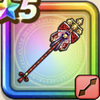

封竜の神楽鈴
攻略班 7.5点 / バーハホイミおはらい封息のまじない花舞いの神楽いきなりバーハ
くわしい特徴
【レベル別習得スキル】 Lv1【スパスタ】さいだいHP+10 Lv1バーハ（消費MP：10）仲間ひとりのブレスダメージを1段階軽減する。効果は2段階まで上げられ、使用時含む5ターンの間継続する。軽減率は1段階目で20%、2段階目で40%。 Lv10ホイミ（消費MP：5）仲間ひとりのHPを回復する Lv15おはらい（消費MP：20）仲間ひとりの呪いを解き、ターン開始時にHPが継続的に少し回復する効果を与える Lv20封息のまじない（消費MP：13）敵1体のブレスを封じる Lv30花舞いの神楽（消費MP：47）仲間全員のHPを回復し自身の闘魂を1貯める。闘魂が3のとき回復量が上昇し、闘魂を解除する Lv35戦闘終了時にMPを10回復する Lv40さいだいMP+12 Lv45かいふく魔力+12 Lv50いきなりバーハ（消費MP：10）戦闘開始時に自動でブレスダメージを軽減する(効果4ターン) 【限界突破スキル】 1凸とくぎHP回復効果+5% 2凸ターン開始時MPを1回復する 3凸とくぎHP回復効果+5% 4凸ターン開始時MPを1回復する